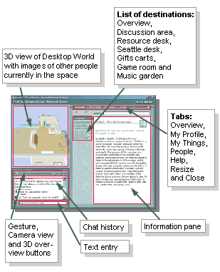

Getting Started

- Destinations: To view the Desktop World overview, discussion area (bulletin board), Resource desk, Seattle desk, gift carts, game room or music garden, click on that item in the list of destinations. This will move you in the 3d space to the appropriate area, and will show you the information in the web page.
- Navigating: To move in the 3D space, move your cursor (arrow) to the 3D window and click. Then use the arrow keys or mouse down and drag your mouse up, down, left or right to move or turn in the appropriate direction.
- Chatting: To chat with others in the space in real time, type in the text window on the lower left of your screen. To see a list of who else is here and find out more about them, click on the People tab.
- Your Information: To change your profile information, your graphical appearance, or add people to your friends list and ignored list, click on the My Profile tab at the top of the information pane.
- Communications: To use your email, web page tool, and view your notes, and gifts, click on the My Things tab at the top of the information pane.
- Gesturing: To gesture (wave, smile, flirt, etc.), change the camera so you see yourself, or to see an overview of the 3D space, click on the appropriate button under the 3D view.
- People: To find out more about others in the space, click on the People tab at the top of the web pane. Here you'll get a list of all people who've been in the space.
- Help: For help on any topic, click on the ? tab at the top of the information pane.
- Resize Windows: To resize the graphics window, click on the resize button at the top of the web pane.
- Log Off: To close Desktop World and log off, click on the close X box in the upper right corner of Desktop World. Make sure you log off Desktop World to prevent others from using your account while using your computer.